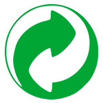
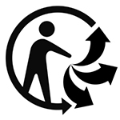
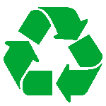
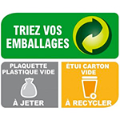
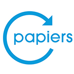
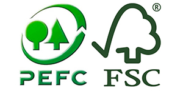

 Ce logo veut dire que l entreprise qui l a apposee sur son produit verse une contribution a Citeo.
 L emballage en question est valorisable, et peut donc eetre trie.
 Votre emballage est recyclable.
 C est le symbole universel du recyclage depuis 1970, cette repreesentation de l infini conçue par le mathematicien allemand August Ferdinand Moobius signifie, lui, aussi, que votre emballage est recyclable.
 Comme le Point Vert, ce sigle destine aux produits en papier (presse, annuaires, prospectus, tracts etc.) vous indique que leurs fabricants ont verse une contribution a un eco-organisme. Et il s agit encore une fois de Citeo, ne en 2017 de la fusion entre Eco-Emballages et EcoFolio, une structure chargee de faire le lien entre tous les acteurs de la filiere papier en France.
 Il s agit ici de certifications environnementales (qui portent les noms des organismes charges de les delivrer) indiquant que le papier, le carton ou les produits en bois sur lesquels on les trouve sont fabriques par des societes veillant a la gestion durable des forets.